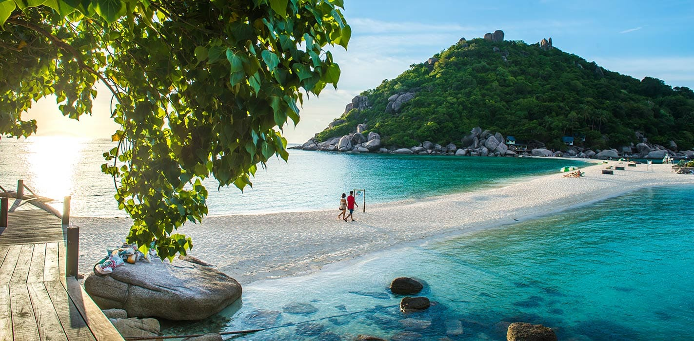

Esta pequeña isla, es uno de los mejores destinos de buceo en Tailandia, si no del mundo. La poca profundidad y el agua cristalina cuentan con abundante vida marina y de coral que seguro complacen tanto a principiantes como a experimentados. Los no buceadores pueden apreciar su belleza viajando en un long tail boat alrededor de la isla para visitar sus muchas playas y preciosas bahías.